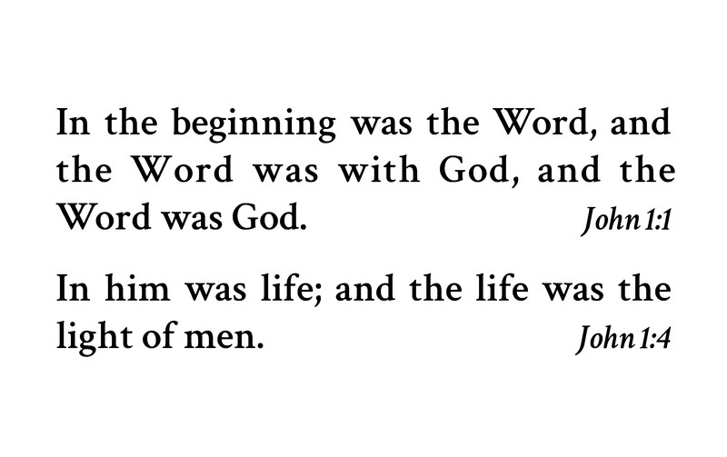
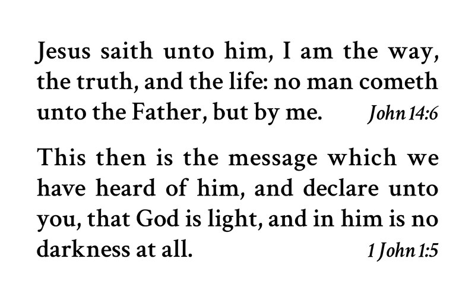

Card 1


Front
In the beginning was the Word, and the Word was with God, and the Word was God.
John 1:1Front
In him was life; and the life was the light of men.
John 1:4Back
Jesus saith unto him, I am the way, the truth, and the life: no man cometh unto the Father, but by me.
John 14:6Back
This then is the message which we have heard of him, and declare unto you, that God is light, and in him is no darkness at all.
1 John 1:5